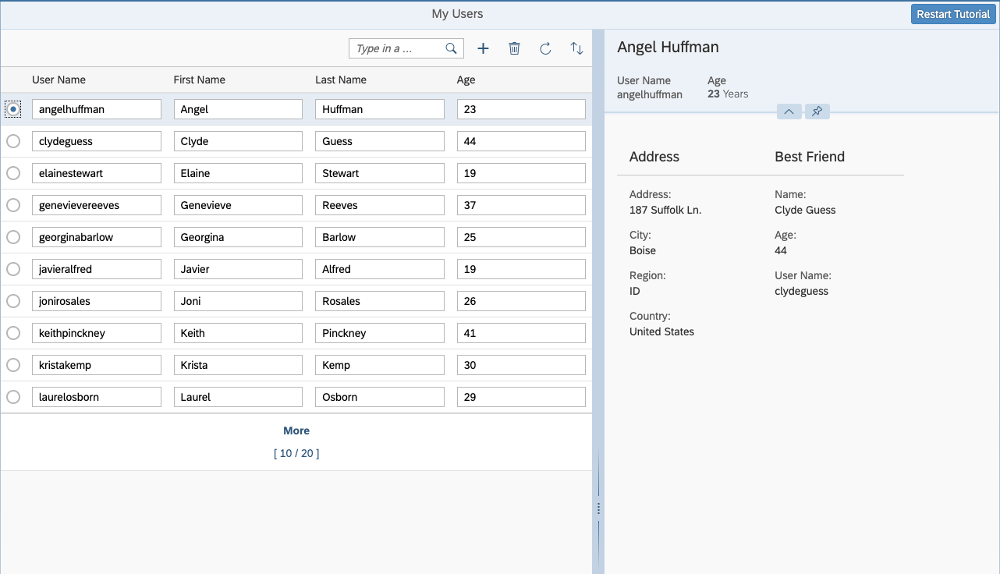

You can view and download all files at OData V4 - Step 10.
...
onMessageBindingChange : function (oEvent) {
...
},
onSelectionChange : function (oEvent) {
this._setDetailArea(oEvent.getParameter("listItem").getBindingContext());
},
...
/**
* Toggles the visibility of the detail area
*
* @param {object} [oUserContext] - the current user context
*/
_setDetailArea : function (oUserContext) {
var oDetailArea = this.byId("detailArea"),
oLayout = this.byId("defaultLayout"),
oOldContext,
oSearchField = this.byId("searchField");
if (!oDetailArea) {
return; // do nothing when running within view destruction
}
oOldContext = oDetailArea.getBindingContext();
if (oOldContext) {
oOldContext.setKeepAlive(false);
}
if (oUserContext) {
oUserContext.setKeepAlive(true,
// hide details if kept entity was refreshed but does not exists any more
this._setDetailArea.bind(this));
}
oDetailArea.setBindingContext(oUserContext || null);
// resize view
oDetailArea.setVisible(!!oUserContext);
oLayout.setSize(oUserContext ? "60%" : "100%");
oLayout.setResizable(!!oUserContext);
oSearchField.setWidth(oUserContext ? "40%" : "20%");
}
...We extend the logic of the _setDetailArea function. First, we check if there's an "old" binding context in the detail area. If
so, the keepAlive for the old context is set to false.
For the new context we set keepAlive to true and add _setDetailArea as an
onBeforeDestroy function to it, which hides the detail area when the user linked to it is deleted in the back end
and the list is refreshed.
You can use the Context#setKeepAlive method to prevent the destruction of information shown in the detail area when
the selected user is no longer part of the list from which the information was selected. This could otherwise happen if you filter or
sort the list.